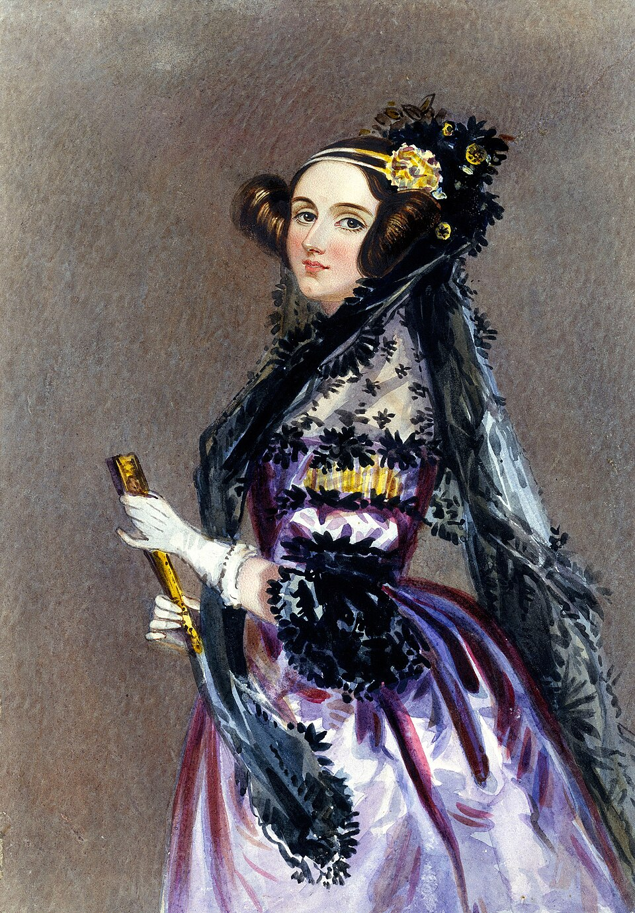
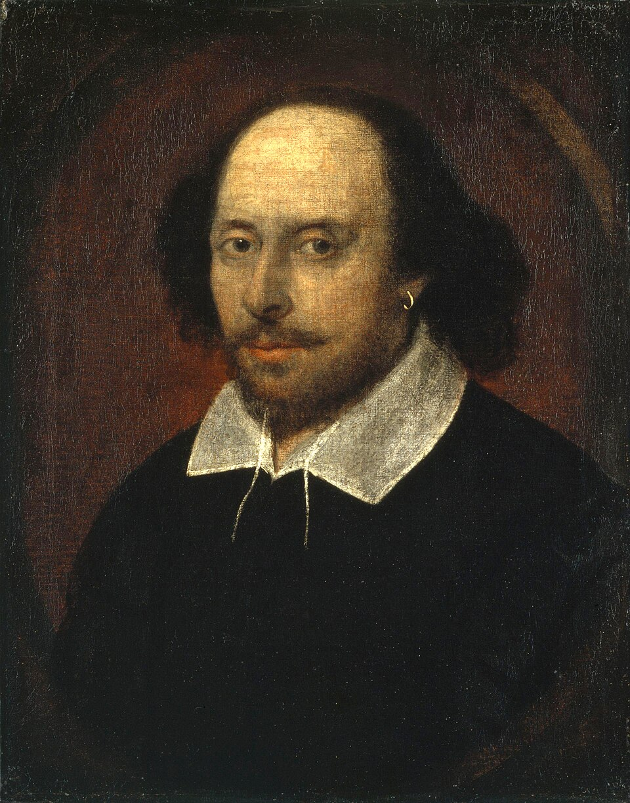
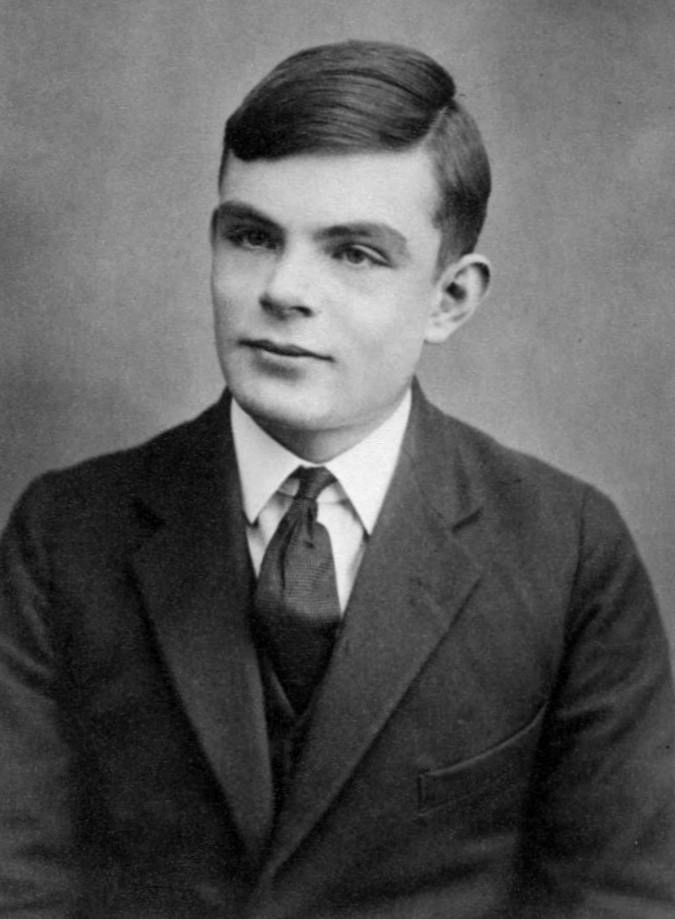
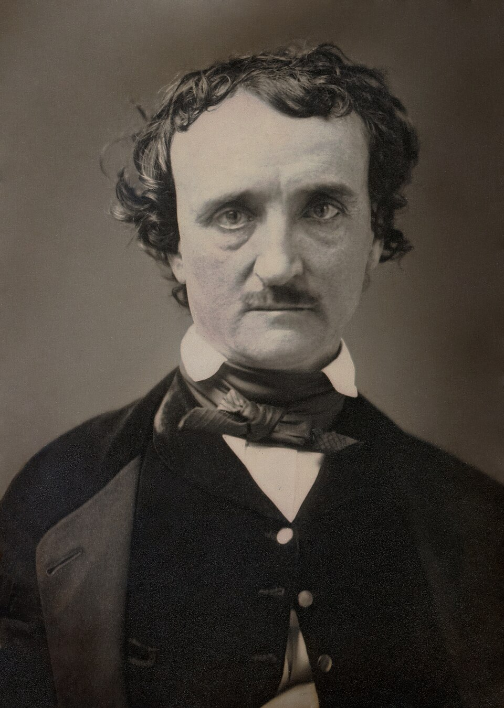
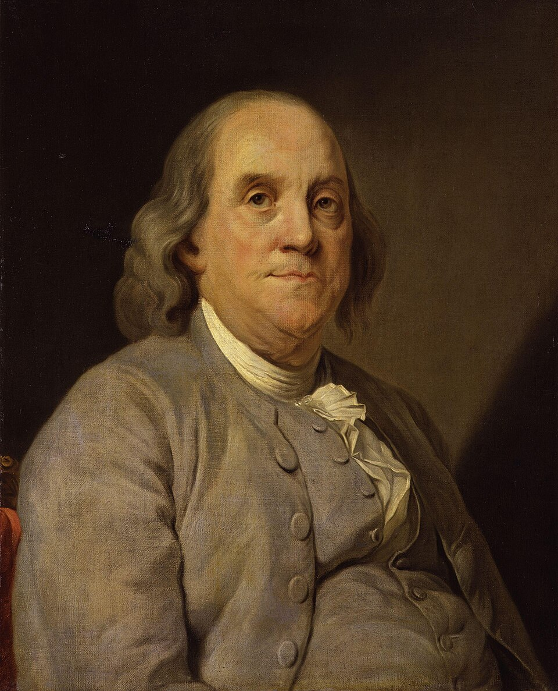

The Journal
Ten months of building things alone.
February to November 2026: an operating system from scratch, thirty apps on the App Store, a lot of rejections, and what it all taught me.
Joshua Trommel
May 20261


Spring
February to May: I started building my own operating system, grew my apps, and cut my projects from thirty to ten.
February
I started building my own computer operating system from scratch. It now has a clock, a keyboard, text on the screen and a tiny command prompt, and it starts up inside a virtual computer. My stock-trading app grew from 58 things you can trade to 100, and it can now send orders to real brokers. I built Dose, a tracker for medicines and supplements, in one sitting. One 18-hour day went to a bug that had blocked logins for a week; a single missing setting was the cause.
The old dream came back, the one I have had since I was five. I am always chasing a faceless person down a hallway, and when I catch them they turn around and it is me. Then they chase me. I have no explanation after twenty years, so I just write it down. Building something big is the best way I know to stop thinking about myself.
April
I spent April building tools for the apps I already had. Epiphany, my markets and world map app, got live flights and wildfires and a chat panel. Spark and Tally now run on Mac and watch too. Arthur, a small AI I built from scratch, got small enough to run inside a web page. I also cut my projects from thirty-odd down to ten.
I made Quest, a to-do app where the characters in my Times Square city game do my real chores for points. My dad's garage door shop got a proper dashboard with jobs, low-stock alerts and a PIN login. I also kept growing Life, the notes document I keep for Amanda.
May
May was mostly Brief, my legal case tool. It went from a rough web page to a real Mac and iPhone app in a week, and it now handles three cases. Tally got a new look and a way to translate its text. Charters, Echo (phone speech-to-text), Beep (a transit helper) and Grapher (a calculator) all went out. Midmonth I merged four projects into one, gave every web app the same cream and red look, and moved Epiphany off a data service that was shutting down.
Away from the screen
I have gone to the gym three or four times a week since December and I am still in therapy. Pre-Calc test prep is always in the background. A two-hour call with Alex turned into our worst argument ever, about whether hitting kids builds character. I also decided on school: computer science, not paralegal.
July 20262


Renames
July: Epiphany reached the App Store, half my apps got new names, and I fixed bugs and leaks nobody had noticed.
July
Epiphany finally reached the App Store. After that I renamed half my apps. Dose is now Healstack, Lingo is Lexly, Books is Bookrank, Brief is Litigate, Grapher is Curvely, and Echo is Voxprint, because Apple said Echo was too generic. Each rename meant new icons and branding, and one name took twelve tries before it was accepted.
Quiet bugs
Most of my real work was fixing things that had been wrong for a long time without anyone noticing. Epiphany's auto-trader never traded because it rounded small orders down to zero shares. Its net worth number left out cash sitting in investment accounts and showed $229 instead of $415. Talli's messages tab was empty because of how it read dates, and Inkpress loaded blank entries.
Security
I checked fifteen projects and found ten real bugs. Voxprint gave paid features to everyone, and three apps had no way to delete your account, which Apple requires. Litigate was showing live court documents to anyone who asked, so I put it behind a real login. Sparkjar let any visitor read other users' passwords and reset keys, so I locked that down.
Money and moving
I made Lexly free, because the paywall never worked. Epiphany's payments had been silently broken for months, so I fixed them and swapped the monthly plan for a $1 unlock. I also moved twelve projects and thirteen web addresses off my old host in one sitting.
Stuck and personal
I lost most of a week to Apple's signing system. Five apps could not upload and I could not fix it, so I am writing that down honestly. Two records requests on the 2021 case came back: the body camera footage never existed and the 911 recording was destroyed on schedule. I also fixed my resume, which wrongly said I was in university. I am self-taught, so now it leads with my eight apps. I saw Jayda for the first time in about ten years, and we spent three days together.
August 20263

Accurate
August: I checked my notes against reality and found rejections, dead keys and a journal that was not publishing.
August
August was the month I stopped trusting my own notes and checked everything against reality. I counted every project and found fifteen folders existing twice, plus a hidden copy of everything inside itself. Deleting it freed a gigabyte.
What Apple actually said
I read the real App Store rejection messages instead of guessing. Eight rejections came down to three causes: four were an account-wide block, three were sign-in failing during review, and one was the word Mac in an app name. Four apps I thought were waiting had been rejected weeks earlier. Lexly's Mac version was blocked because books sold in China need a Chinese publishing license. I fixed it by dropping China from where the app is sold.
Things that said done but weren't
I fixed bugs in eleven projects that had never made my list. This journal was not even publishing: the deploy printed success, but it was sending to the wrong project, so the site sat weeks behind. Every API key on this computer turned out to be dead, because a key change months ago never reached the saved copies. Four book summaries became stubs because I deleted the source photos before checking them.
What did ship
Apple called two apps too basic, so I rebuilt both as real native apps. Quotable became Quotestreak. Bookrank went live with a redesign. Inkpress went to the App Store with sixteen news feeds. GitHub sign-in reached Litigate, Lexly and Bookrank, and all nineteen apps got launch screens.
Working smarter
Running nine helpers at once made my computer crawl and burned my budget in minutes, so now it is two or three at most. I also cleaned up this journal: fourteen scattered entries became a few readable ones, with a check that blocks long or messy posts.
September 20264


Scale
September: 30 apps live, paid apps on sale at $1, and a program that taught itself Duolingo chess.
Early September
September opened with security fixes across six apps. I built Plain, a text editor, and Breathe, a breathing app, in a day each. All 17 of my web apps got real Android versions, and I now have 30 apps live. I also built a helper that hands boring chores to a free AI running on my own computer, which saves money.
Sep 4 to 7
I started Hackrange, a security training game, and published Bookrank's Listen feature. I wired payments into Healstack and Sparkjar and shipped Weather, Fieldbook and Lucarne, a small web browser. Epiphany's broker connection got stuck in a loop and used 480 thousand requests over a weekend, so I removed one line. I also posted a lost-cat listing for Vinney, an orange tabby last seen in Langley.
Sep 8 to 10
I got my Canadian business number, which unlocks iPhone revenue. I also taught a program to play the Duolingo chess game by reading the page directly. It beat the bot and then played language lessons on its own all night. Epiphany for iPhone was approved with a paid daily summary. Voxprint and Epiphany Premium went on sale at $1, I scheduled Product Hunt launches for thirteen apps, and Windgate (the old Breathe) reached the App Store.
Sep 11 to 12
I added Apple Watch apps to three apps, and sign-in with Google and Apple to nine. I made Siftbox, a mail app, out of a mail helper, and sent it to Apple. Conveyer, my Factorio-playing AI, got a live viewer and progress charts. My security watcher Tripwire can now write fixes for broken tests on its own. I cut Epiphany's long instruction file from 630 lines to 32. The week ended with a cleanup across 50 projects and 180 changes.
September 20265

Kernel
Late September: my operating system now runs apps in protected boxes, and my AI assistant Samantha learned a lot.
Joshua Tree
Joshua Tree is the operating system I am building from scratch. This stretch it learned to run several programs at once, read disks and files, connect to a network and show a live landing page. It got Mail, Contacts, Calculator, Weather and wallpapers. Each app now runs in its own protected box, so one crashing cannot take down the whole system. It also got a new logo, sharper text and a sound card driver. I designed a case for it with six desert-layer rings and a tree engraved on top. The plan is $199 for the case and OS, or $349 for the complete kit. I also made a 36-second ad with Samantha's voice and music.
Samantha and Turing
Turing is my local AI assistant, and Samantha is the voice and face I gave it. She can now research on Wikipedia, write briefs, read my mail, notes and reminders, and explain math up to Pre-Calc 12. Her face and voice work on the Mac and phone. I made her pick the right tool more often: wrong picks on test questions went down by more than half. Turing shipped nine releases in one day.
Apps
I dropped eight apps to 99 cents. Curvely now matches Desmos. Plank, Hamurabi, Roost, Dream and Hormuz went out. Madobe, my small web browser, got renamed. Bookrank and Lec got quizzes, and Homeroom got practice questions. Every project now has full documentation, and a big redesign touched 28 landing pages. Nimble for iPhone was approved, and Sidewise's iPhone version was rejected while the Mac version is live.
Vancouver Vice
My Vancouver crime game now has SkyTrain, Victoria and Langley, and a face scan that makes the main character look like me. I wrote its docs and finished its second act.
Housekeeping
I closed 29 old GitHub issues, deleted 44 old branches and freed 5 GB of disk space. New rules for myself: stability and security work comes before new features, and anything stuck in the background for 30 minutes gets killed.
October 20266


October
October: Joshua Tree's second big release, Bookrank on iPhone, two renames, and a Raspberry Pi.
Oct 1-3
Joshua Tree's second release sandboxed twenty-six apps; Bookrank works offline.
Oct 4
My idea app became Hikko; iPhone and Mac are in review.
Oct 5-8
Apple rejected seven apps as spam, Hikko over screenshots.
Oct 11-13
I built a digest of twenty AI accounts on X; Plank can call models.
Oct 16-18
Talli's Stripe webhook rejected purchases; fixed. A security header broke fonts; I fixed ten repos. Mailbag and Patois went into review, and I cut GitHub from 62 repos to 31.
Oct 19-21
Notate's offline update is live on iPhone and Watch; it became Echo. Glyphbox became Icelus, and Curvely went into review as Pan.
Oct 22-25
Epiphany splits subscriptions by currency, so US plans stop hitting my Canadian total. Coranto became Bugle, but the store says BugleNews after Apple refused. Five Apple appeals won.
Oct 26-27
Duke beat my platformer Mirage in 3,725 steps. Noema's big day: a Lean proof showed Busy Beaver 2,3 is 38, and ClinicalTrials.gov shows 407 impossible standard deviations.
Oct 28-29
Apple cleared Sidewise's spam answers; it folded into Bugle, live on iPhone and Mac. Homeward became Sighting. Kernel went into App Review.
Joshua Tree got a film. Plank calls C, and Millie, my phone assistant, shipped ten releases, catching three bugs by calling herself. I split my labs into ten public repos and made Keyrate four versions sharing thirty tests.
Oct 30
Kernel's release is on GitHub with chapters 1 to 4 from phone photos; open issues went from 43 to zero.
I deleted six dead GitHub repos and set a rule: a repo needs a store listing or domain.
Oct 31
Airwell's new build drops Windgate. Scrounger went back; Cartons, Horula and Atlin still wait. Elah's first iPhone build was rejected, so I cut the NIV and added nine public domain Bibles, offline; both wait.
November 20267


November
November: Joshua Tree on a real Pi, nine apps go free as a test, Airwell and Blackcomb updates, and a cut list.
Nov 1
Accessibility took the day: 98 pages pass an automated check and twenty apps got fixes. Sighting and Co-Stanza went to App Review; Apple wants every post reportable and blockable. Joshua Tree first ran full screen on a Pi 4; board testing found five bugs, fixed.
Nov 2
Joshua Tree shipped Shortcuts, Bluetooth and YouTube; its Pi graphics chip runs on a driver I wrote.
Nov 6
I filed 31 Apple Notes, added eleven Kernel chapters, and deleted 184 source photos; 566 wait.
Apple rejected Keyrate as spam; I rebuilt its word list from public-domain novels; it's back in review.
Nov 7
Nine projects broke under Xcode 27; all fixed.
Apple rejected Elah, Co-Stanza and Sighting as spam lookalikes. I added downloads, site icons, a fire button and translation. Mac is in review, iPhone waits.
Nov 10
Apple rejected Patois for not signing in with Apple, which was never spam. Fixed; the iPhone build is back in review.
Nov 13
Apple locked my account until I accepted a new agreement. Tocks was rejected for background audio; Apple asked what Delete account does.
Nov 15
The Pi's auto lock is in review: only my password opens it.
I built the three pieces Doorstock's spec lacked: spring costs, a label scanner and an accountant CSV. Mac is built; iPhone waits on appeal. Epiphany is free on the web; Pro is $1.99 a month or $14.99 a year, and $1 buyers keep it for life. I shut three billing holes; the iPhone paywall is next.
Nov 16
A stale card clock broke secure downloads. Paddle froze from repainting every frame; now only moving parts repaint.
Joshua Tree shipped graphics acceleration; the Mac now drives it. I started a 64-bit PC port.
Nov 18
A new desktop section shows Spaces, Mission Control, Spotlight and Launchpad.
I graded the Joshua Tree landing a B- and cut its repeats.
Vancouver Vice's Unreal project was lost with the LaCie; I'm rebuilding it from the web game's data.
Nov 21
Airwell passed App Review and went live. I fixed two API bugs: cancels errored and failures got cached.
A security audit found four shipped holes: Epiphany's CDN cached one person's data for an hour, a reset link could take over an account, Talli let users read others' files, and Melete could link a squatted signup. I locked Turing's public voice endpoint: anyone could make my cloned voice say any text, and now it only reads Turing's answers.
Apple said Epiphany's iPhone build had ads; it has none, so I resubmitted. Scrounger was rejected for user posts; it got a terms screen with Report and Block. Elah was rejected twice for spam; I resubmitted with a new map and icon.
I cleared 43 saved X posts; they graded B and seed Melete's idea.
Nov 22
The Connect Mouse shortcut froze for fifteen seconds, so I rebuilt it as Tether, a menu bar app that revives a mouse. Hormuz got the Keyrate look; the strait is still shut, day 268.
Nov 23
I shipped Echo's release with Word export and a Mac dictation hotkey, and rebuilt its landing around the live view. Patois got its parrot icon back; I redrew the 32 Things icons. I asked Apple for its bigger cloud model; four apps get it once it lands.
I sorted 87 Apple Notes into 25 roadmaps and emptied Notes.
Nov 25
Almost nobody was buying, so nine small apps went free as a test, leaving Echo, Kernel and Epiphany alone. On December 23 I'll check whether price or discovery was the problem.
Airwell got the biggest push: themes, a welcome screen and eleven languages. The update is with Apple; its Product Hunt launch waits.
I cleaned App Store Connect: deleted Oohaah and Sidewise, and dropped China from all 21 apps to stop the China banners. Apple's reasons: Elah and Cartons are spam, Mailbag and Scrounger got 2.1 issues.
Epiphany's Get Pro button is with Apple; once approved, it goes free and sells Pro on the web. ## Nov 26
My Bluetooth mouse dropped overnight and Tether couldn't revive it, since it came back at a new address. I re-paired it by hand and taught Tether to do that after 15 seconds, still untested. It also checks the device list and ships notarized on GitHub.
Blackcomb's next version is built and uploaded but not sent to Apple; the Mac build waits on my yes. The landing snows only when it's snowing in Whistler, and cut a 9:16 ad from the real app.
My promo tool cuts YouTube walkthroughs and TikTok ads from real screens; ten apps have videos.
Flamingo Map got its App Store listing and live landing. Cyllene's drafter falls back to Claude but holds answers only I can give. The Flamingo reply is drafted; the recording is on take three. Nothing has gone to Apple; Cyllene's iPhone app is live.
Product Hunt ate the rest of the day: I fixed old names and a blanked price on 32 products, and 14 apps got launch kits.
The portfolio site's prices didn't match the store, so I rebuilt them from App Store Connect. Seven apps it listed at 99 cents are free; Epiphany is now 99 cents like Echo and Kernel. The three paid apps have no in-app purchase, so they go free with a 99 cent premium unlock until it passes.
Turing shipped version 10, right on 81 percent of test rows. Its coder, trained on my own code, had a bug in its first answer, so it's not trusted yet. The goal is 28 of 40 sealed tasks. OEIS asked for one fix; I made it and sent another. Noema got a Mac and iPhone app.
I went through 160 saved X bookmarks and picked plays: a product simulator, a small Claude Code model, Echo voice leads and Kernel covers.
I forked a Chrome extension that skips YouTube ads. Mine jumps to the end of the ad and clicks Skip; YouTube stopped serving ads during testing, so it's unproven.
Few apps have earned since June, so the rest go on the cut list, lookalikes first. Next: the app audit.
I gave 32 landing pages an FAQ section for search. Nine apps still wait on a build or Pages step.
Nov 27
KPU confirmed my three Langley classes. New rule: never Surrey. SFU computing science transfers skip Pre-Calc 12 on paper, but the math needs it; an online path runs through Thompson Rivers. KPU Accessibility has my meeting request.
I swapped the Plank book's chapter pictures for eight wood plates I generated with a script. The old Babel and painting halftones are gone. The book check passes on all 41 programs, and the live book shows the new plates.
I renamed the pentesting dojo from f4lc0n to Grouse, after Grouse Mountain and the falcon that hunts the bird. The repo and folder moved; grouse.jaybulb.com is live, and the old hostnames keep serving.
I turned the journal into a short book, live at journal.jaybulb.com/book, with each post's header card as its banner. I also fixed two dangling lines in the October and November posts.